Data Landscape Audit
We map where your data lives — spreadsheets, POS, CRM, ERP, bank feeds — how it moves, and which decisions are still made on gut feel.
Data landscape audits, managed reporting, and ELT/ETL pipelines we build, operate, and monitor — so decisions run on clean, fresh data.

We find where your data lives, connect it into one source of truth, and keep the pipelines fresh on a service-level agreement.
We map where your data lives — spreadsheets, POS, CRM, ERP, bank feeds — how it moves, and which decisions are still made on gut feel.
Managed dashboards for sales, cash, and operations — with an SLA on freshness, not just a tool install. You get the one working proof first.
ELT/ETL connectors that move operational data into a warehouse — and we operate the pipeline: monitor, repair, and alert as a managed line.
Deduplication, naming standards, and single-source-of-truth rules — plus pragmatic GDPR/CCPA mapping and killing the fragile Excel monsters that run the business.
The platforms our teams use to move, model, and monitor your data.
We measure success by decisions made on data you actually trust.
A fixed-price assessment that maps your data landscape and prices the cost of bad data — with one live dashboard included.
We deliver the top pipeline need from the roadmap as a fixed-price build, with demos along the way.
A monthly retainer that monitors pipelines, refreshes reports, and alerts on quality with agreed SLAs.
We consolidate warehouses and BI, then make your data AI-ready for automation and product analytics.
Tell us about the spreadsheets, systems, and reports your business runs on — we will respond with a practical plan.